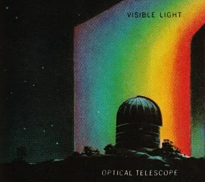
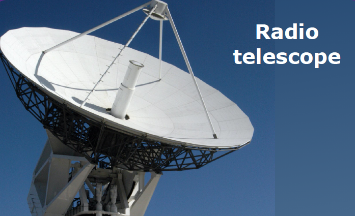
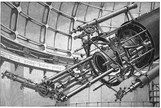

🔬 How Do We Observe Nebulae?
- Visible Light Telescopes: Such as the Hubble Space Telescope reveal the stunning colors and fine details of nebulae.

- Infrared Telescopes: Like the James Webb Space Telescope penetrate dust clouds to show hidden stars and proto-stellar activity.

- Radio Telescopes: Detect cold gas and reveal large-scale structures in nebulae invisible to optical telescopes.

- Spectroscopy: Allows scientists to determine the chemical composition, temperature, motion, and density of nebulae by analyzing light spectra.
